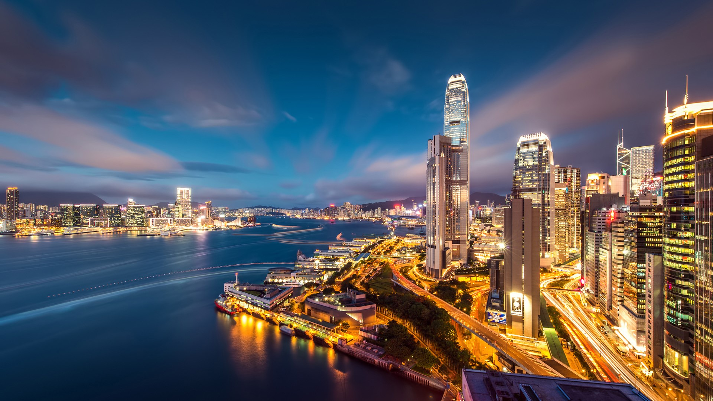
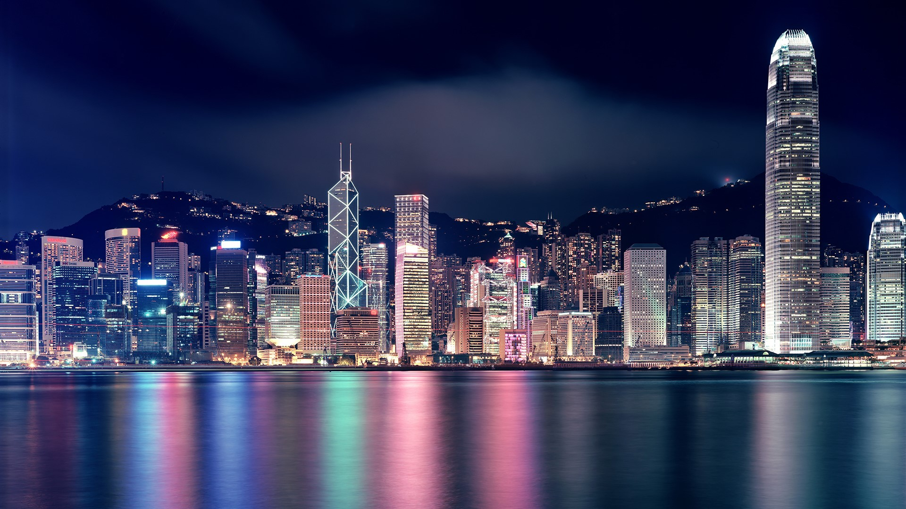
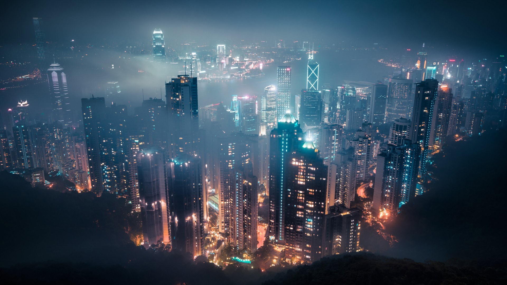
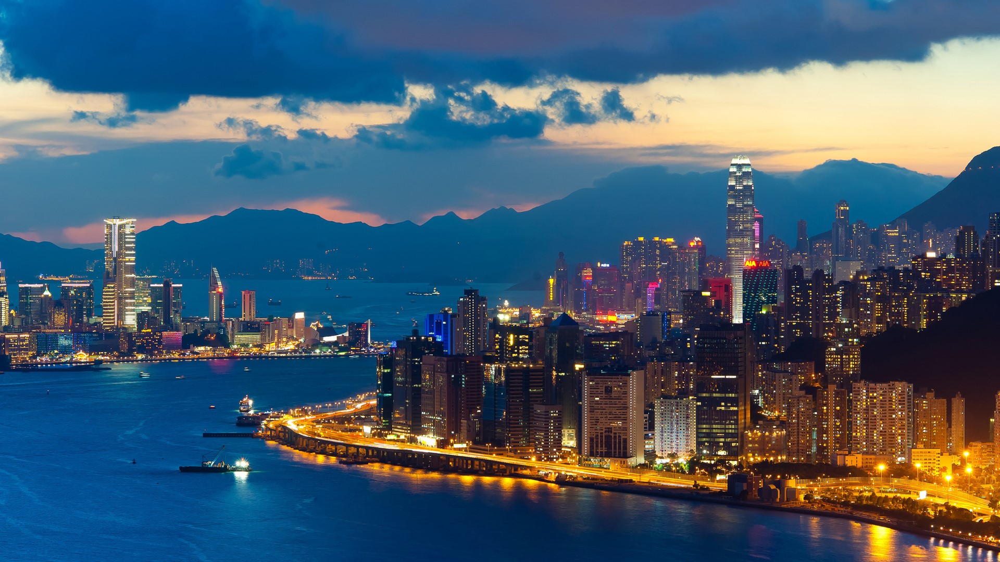
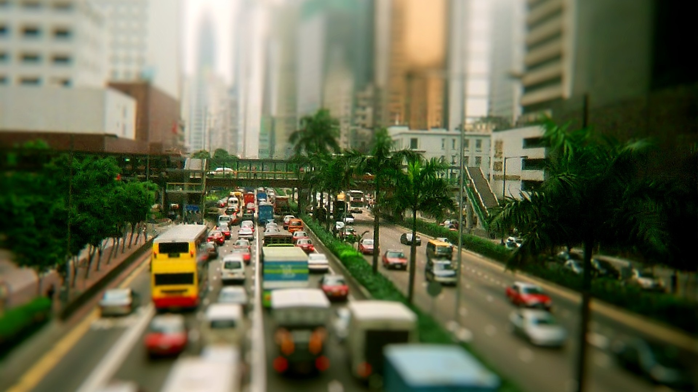
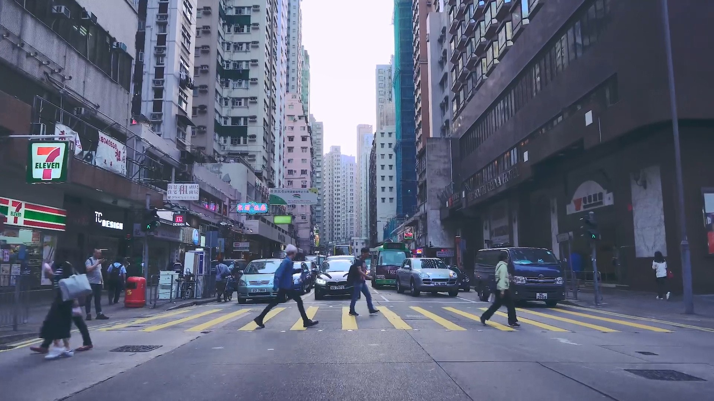
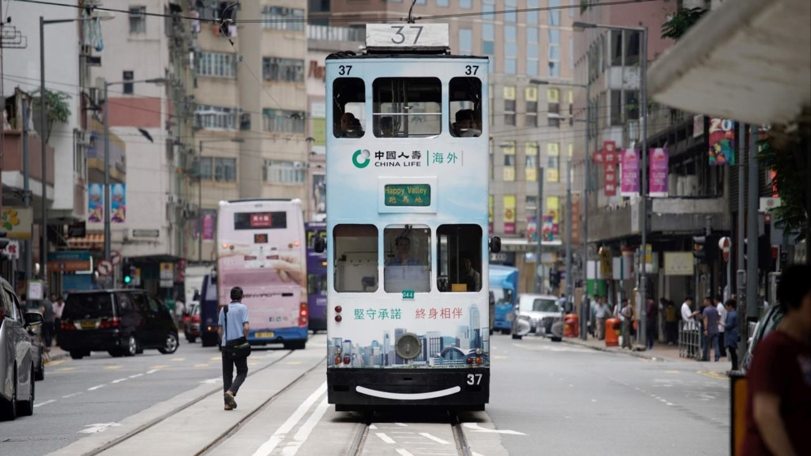
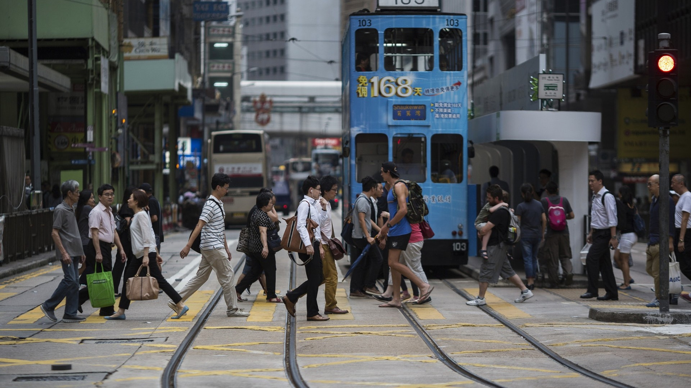
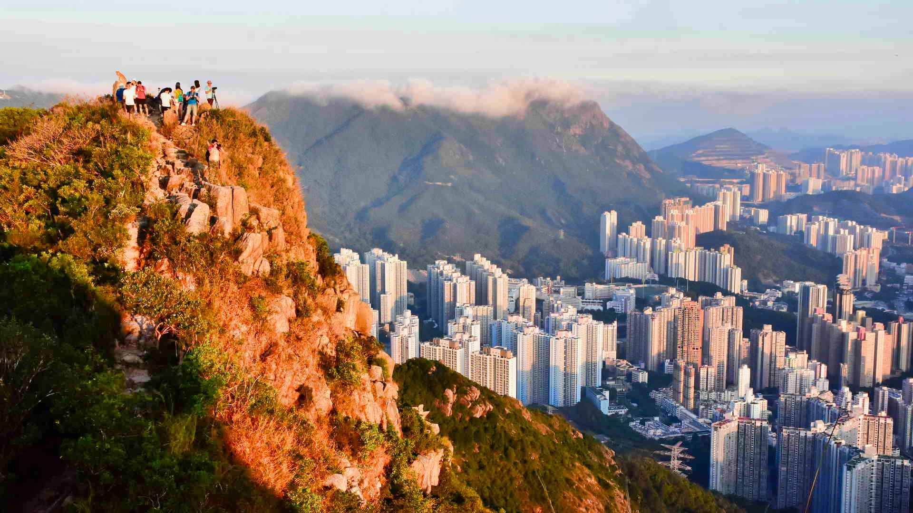

乘搭快捷舒適的機場快綫來往機場與中環，車程只需24分鐘
香港國際機場設有完善的公共巴士路線，為旅客提供方便及價格相宜的交通服務選擇。
旅客如已預訂香港大型酒店，可前往設於一號客運大樓接機大堂B的商業服務櫃檯，預約乘搭酒店巴士直達酒店。
的士提供點對點的交通服務，接載乘客往來香港國際機場。抵港旅客在步出接機大堂後，可經左邊的緩坡道前往的士站候車。
到太平山頂，最好是選擇接近黃昏的時候，這樣既能觀賞到白天的城市景觀，又可以靜待夜幕低垂時，整個城市在瞬間變幻的一刻。在太平山頂上有數個觀景台，包括盧吉道觀景台、獅子亭、位於山頂廣場頂層的免費觀景台Green Terrace，以及凌霄閣頂層的觀景台「凌霄閣摩天台428」。山頂廣場和凌霄閣同樣集觀景與購物享樂於一體，裡頭有多家餐廳讓您一邊用餐，一邊觀景，從高級西餐廳、露天咖啡廳，以至連鎖快餐店都有，豐儉由人。在凌霄閣，您還可以逛逛香港杜莎夫人蠟像館。
登太平山，最好玩就是乘搭山頂纜車去。在車廂內隨纜車沿陡峭的斜坡上去，路旁的林木和高樓大廈彷彿往後倒退，別有一番滋味。纜車的來回車票售價，比單程車票便宜，如果您打算來回都乘坐纜車的話，買來回車票則比較划算。
| 地址： | 香港島太平山頂 |
|---|---|
| 查詢： | +852 2849 0668 （凌霄閣） +852 2522 0922 （山頂纜車） +852 2849 4113 (山頂廣場) |
| 網址： | www.thepeak.com.hk www.thepeakgalleria.com |
到太平山頂，最好是選擇接近黃昏的時候，這樣既能觀賞到白天的城市景觀，又可以靜待夜幕低垂時，整個城市在瞬間變幻的一刻。在太平山頂上有數個觀景台，包括盧吉道觀景台、獅子亭、位於山頂廣場頂層的免費觀景台Green Terrace，以及凌霄閣頂層的觀景台「凌霄閣摩天台428」。山頂廣場和凌霄閣同樣集觀景與購物享樂於一體，裡頭有多家餐廳讓您一邊用餐，一邊觀景，從高級西餐廳、露天咖啡廳，以至連鎖快餐店都有，豐儉由人。在凌霄閣，您還可以逛逛香港杜莎夫人蠟像館。
登太平山，最好玩就是乘搭山頂纜車去。在車廂內隨纜車沿陡峭的斜坡上去，路旁的林木和高樓大廈彷彿往後倒退，別有一番滋味。纜車的來回車票售價，比單程車票便宜，如果您打算來回都乘坐纜車的話，買來回車票則比較划算。
| 地址： | 香港島太平山頂 |
|---|---|
| 查詢： | +852 2849 0668 （凌霄閣） +852 2522 0922 （山頂纜車） +852 2849 4113 (山頂廣場) |
| 網址： | www.thepeak.com.hk www.thepeakgalleria.com |